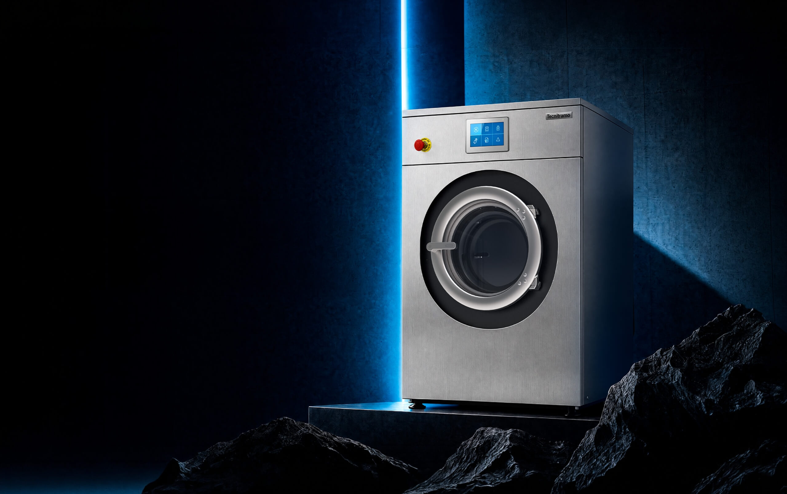

Cada chamada atendida.
Cada contacto classificado.
Um assistente de voz em português de Portugal que atende todas as chamadas, separa quem quer comprar já de quem quer um orçamento, faz a qualificação técnica sem atrito e entrega ao Marco a lista do dia por ordem de prioridade.

- Toca o telemóvel. Número desconhecido.
Quanto custa montar uma lavandaria self-service?
- Vinte minutos a explicar capacidades, gás, trifásica.
Vou pensar.
Não tinha espaço, nem investimento, nem data.
Quatro pontos, por ordem de arranque
Trinta contactos por dia, a par de tudo o resto
Quem atende é o Marco ou a colega, quando podem. Muitas chamadas ficam por atender e algumas chegam às 20h30 ou às 21h00. Houve uma altura em que o telefone se ouvia a tocar sem estar a tocar.
Arranque: fase 1Muitos curiosos, a mesma conversa outra vez
Tipo de lavandaria, número e capacidade das máquinas, moedeiro, gás ou elétrica, água quente ou fria, trifásica ou monofásica. Feito por uma pessoa, demora e pode criar atrito com o cliente.
Arranque: fase 1Passa logo, sem esperar
A primeira pergunta separa tudo: comprar já ou orçamento? Quem quer comprar já faz mais duas ou três perguntas e a chamada passa ao Marco. O resto chega classificado, para decidir a quem ligar primeiro.
Arranque: fase 1O mesmo guião, noutros canais
O WhatsApp recebe menos contactos, e os orçamentos vivem no IGEST. Depois de a voz estar a render, o mesmo guião passa para o WhatsApp e avaliamos a ligação ao IGEST para os orçamentos.
Mais à frente«Pode passar todas, mas classificadas. Depois decido eu.» É esta a regra do assistente.
O que muda para quem liga às 20h47
Hoje
- O Marco atende ao jantar, ou não atende e o contacto perde-se.
- Vinte minutos de perguntas e explicações, sem saber se o projeto é real.
Vou pensar.
Mais um orçamento igual aos outros, só muda o nome.- Amanhã, os projetos bons estão misturados com os curiosos.
Com o assistente de voz
- Atende ao primeiro toque: «TecniTramo, boa noite.»
- Pergunta logo: comprar já, ou orçamento?
- Segue o guião: lavandaria, máquinas, instalação, investimento, prazo. Explica sem pressa o que o cliente não sabe.
- O Marco abre a lista do dia: prioridade A primeiro, cada contacto com o resumo da conversa.
O assistente não fecha negócios. Faz a triagem, para o Marco só pegar no telefone quando vale a pena.
Uma pergunta separa tudo
Duas ou três perguntas e passa ao Marco
- O que precisa e de que capacidade
- Para quando, e onde
- Nome e contacto
A qualificação completa, com calma
As perguntas e os critérios A, B e C fecham-se com o Marco, a partir das chamadas gravadas na auditoria.
Em dois minutos, a Bia passa a ser da TecniTramo
A Bia é a nossa assistente genérica: ainda não conhece a TecniTramo. Damos-lhe o contexto e o guião em voz alta, como a um colega novo, e ela começa a atender.
Em alta voz, na reunião. Tudo o que a Bia sabe sobre a TecniTramo é o que lhe dissermos nos quatro passos.
Vamos fazer um role play: eu sou um cliente e tu atendes a linha da TecniTramo. O telefone está a tocar.A partir daqui, falamos como um dos três clientes do slide seguinte.
- Quem somos
Olá, Bia. A partir de agora és a assistente da TecniTramo. Vendemos maquinaria de lavandaria Tecnitramo: máquinas de lavar, secadores e calandras, para lavandarias self-service, comerciais e industriais, e para lares, hospitais e hotéis. Também fazemos assistência técnica.
- A primeira pergunta
Quando alguém ligar, perguntas logo se quer comprar já ou se quer um orçamento. Se for para comprar já, perguntas o quê, para quando e onde, e dizes que vais passar a chamada ao Marco.
- O guião do orçamento
Se for um orçamento, perguntas: que tipo de lavandaria é, se já tem espaço e quantos metros quadrados, quantas máquinas de lavar e de secar e de que capacidade, se é com moedeiro, se é elétrica, a gás ou a vapor, água quente ou fria, monofásica ou trifásica, o investimento previsto e para quando. No fim, nome, telemóvel e localidade.
- As regras
Não dás preços nem prazos. Se o cliente não souber uma resposta, não insistes, fica para o técnico confirmar. Se pedir algo que não faz sentido, como uma máquina de cinquenta quilos para uma loja pequena, explicas com calma a diferença. No fim dizes que o Marco liga com o orçamento.
Três chamadas para pôr a Bia à prova
Cada uma testa uma parte do guião. Escolha uma, ligue, e fale como o cliente.
«Quero abrir uma self-service»
O Rui arrendou uma loja de 60 m² em Guimarães, perto da universidade. Quer três máquinas de lavar e três de secar, com moedeiro. Tem gás, mas não sabe se a luz é trifásica. Investimento à volta de 40, 45 mil
, abrir em fevereiro.
«Preciso de uma máquina esta semana»
O José gere a lavandaria interna de um lar em Barcelos. A máquina de lavar de 23 kg avariou, o técnico disse que não compensa reparar e precisa de outra já. É elétrica, trifásica. Fala depressa e quer falar com alguém.
«Quanto custa uma de 50 kg?»
Liga sem se apresentar. Quer uma máquina de 50 quilos
para uma loja de 25 m², porque a de 20 kg que tem em casa não chega. Insiste no preço e diz que o concorrente lhe deu um valor por telefone.
Enquanto o cliente fala, a ficha preenche-se e a prioridade aparece
Replay de uma chamada como a que acabou de fazer. Cliente, contactos e valores são ilustrativos.
Quem quer comprar já chega ao Marco em menos de dois minutos
Cliente, instituição e contactos são ilustrativos. O Marco recebe o resumo antes de atender, para não perguntar tudo outra vez.
Quando a chamada não segue o guião
O assistente sabe o que pode resolver e o que tem de passar a uma pessoa. Veja o raciocínio em cada chamada.
Nomes, horas e contactos são ilustrativos.
O Marco só pega no telefone quando vale a pena
O assistente atende no número de sempre, segue o guião da TecniTramo e entrega cada contacto onde o Marco já trabalha: no WhatsApp e numa folha de contactos classificados.
Três regras que o assistente não quebra
Não dá preços
Nem «mais ou menos». O orçamento é do Marco, que o faz com os dados certos. Descontos e condições também ficam sempre com ele.
Educa sem atrito
Explica com paciência o que o cliente não sabe (capacidades, gás ou elétrica, trifásica) e aceita o «não sei»: fica anotado para o técnico confirmar.
Passa o que é para uma pessoa
Quem quer comprar já, quem quer negociar, quem está desagradado. Passa a chamada ou marca prioritário, sempre com o resumo.
O assistente faz
- Atende todas as chamadas, também fora de horas
- Separa comprar já, orçamento e assistência
- Segue o guião de qualificação da TecniTramo
- Classifica e entrega cada contacto com o resumo
- Grava e transcreve todas as chamadas que atende
Fica com o Marco
- Os orçamentos, os preços e as negociações
- A escolha das máquinas certas para cada projeto
- A relação com o cliente, que às vezes compra daqui a dois anos
- As regras, o guião e o tom: a TecniTramo define, o assistente cumpre
Duas a três semanas a gravar as chamadas do Marco
O guião do assistente sai das conversas reais. Gravamos as chamadas comerciais nos telemóveis Android da TecniTramo, tiramos as perguntas que fazem, as dúvidas dos clientes e os critérios de prioridade. Fica também como documentação para quem entrar na equipa.
Ver o que cada telemóvel permite
- App Telefone da Google (Pixel e muitas outras marcas): Definições › Gravação de chamadas. Em Portugal desde fevereiro de 2026
- Samsung: nos modelos vendidos em Portugal a gravação nativa costuma não aparecer. Experimentamos a app Telefone da Google como app de chamadas
- Uma chamada de teste em cada telemóvel, para confirmar que se ouvem os dois lados
Gravação automática ligada
- Gravar sempre os números que não estão nos contactos, e os clientes que o Marco escolher. Os contactos pessoais ficam de fora
- Apagar automaticamente: nunca, até as gravações nos chegarem
- O telemóvel avisa o outro lado de que a chamada está a ser gravada
Gravações para uma pasta partilhada
- As gravações ficam só no telemóvel: uma vez por semana passam para uma pasta da Drive da TecniTramo, partilhada connosco
- Ouvimos, transcrevemos e tiramos o guião
- No fim da auditoria, apagamos tudo
Antes de começarmos, informo que esta chamada está a ser gravada para melhorarmos o nosso atendimento.A lei pede que o cliente seja informado antes.
Por onde começamos, e o que vem depois
Assistente de voz que atende e qualifica
- Auditoria: duas a três semanas de chamadas gravadas e o guião mapeado
- Triagem comprar já, orçamento e assistência, com passagem de chamada ao Marco
- Qualificação completa e classificação A, B, C
- Entrega por WhatsApp e numa folha de contactos, com gravação e transcrição
O mesmo guião no WhatsApp
- Quem escreve no WhatsApp tem a mesma qualificação de quem liga
- Lista do dia única, com os dois canais
Orçamentos a partir do IGEST
- Os orçamentos que hoje são iguais, só muda o nome, preparados a partir da qualificação
- Depois de validarmos a integração do IGEST com a SIGOV
Assistente de voz da TecniTramo
Seis semanas, com o Marco por perto
Arranque
Gravação ligada nos telemóveis, primeira conversa sobre o guião e os critérios A, B, C.
Auditoria
Ouvimos as chamadas: perguntas, dúvidas dos clientes, o que separa um projeto real de um curioso.
Guião e voz
Guião fechado com o Marco, tom da TecniTramo, o que o assistente diz e não diz.
Testes
O Marco e a colega ligam como clientes difíceis. Afinamos até passar.
Fora de horas
Atende primeiro só depois das 19h00 e quando ninguém atende.
Produção
Todas as chamadas, acompanhadas de perto no primeiro mês.
Semanas contadas a partir da adjudicação. A auditoria pode prolongar-se uma semana se houver poucas chamadas gravadas.